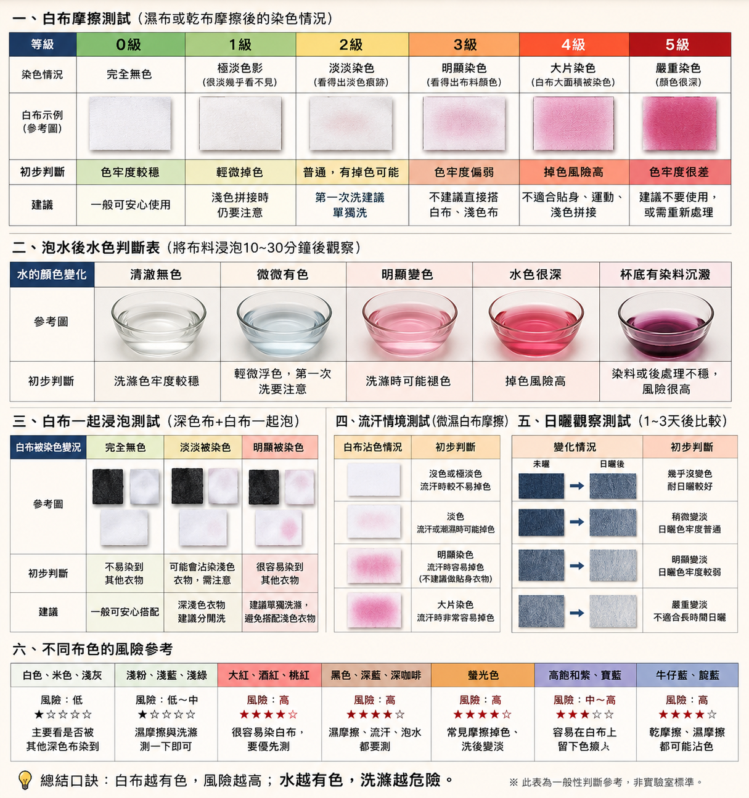

Q1：最簡單的色牢度測試要準備什麼？
準備白色衛生紙和一點清水就可以。建議使用沒有印花、沒有香味、顏色越白越好的衛生紙，這樣比較容易看出布料是否有染色。
色牢度簡單說，就是布料顏色穩不穩、會不會掉色、會不會染到其他衣物。正式檢測要送實驗室，但一般找布、打樣或少量確認時，可以先用白色衛生紙做初步判斷。

準備白色衛生紙和一點清水就可以。建議使用沒有印花、沒有香味、顏色越白越好的衛生紙，這樣比較容易看出布料是否有染色。
拿一張白色衛生紙，在布料表面包住壓 10 到 20 次。摩擦後看衛生紙上有沒有顏色。
| 衛生紙狀況 | 初步判斷 |
|---|---|
| 完全沒有染色 | 色牢度表現較穩定。 |
| 有淡淡顏色 | 仍可使用，但洗滌或拼接淺色布時要注意。 |
| 明顯染色 | 掉色風險較高，不建議直接大量使用。 |
把白色衛生紙沾一點水，擰到微濕，不要濕到滴水。再拿去摩擦布料表面 10 到 20 次。
如果濕衛生紙明顯染色，代表布料遇到水、汗水或洗滌時，可能比較容易掉色。運動服、團體服、制服、貼身衣物特別建議做這一步。
剪一小塊布，放進透明杯或白色碗裡，加清水浸泡 10 到 30 分鐘後觀察水色。
可以做「深色布加白色衛生紙一起泡」的簡單測試。把深色布和白色衛生紙一起泡水 10 到 30 分鐘，再看衛生紙是否被染色。
如果衛生紙明顯變色，代表這塊布有機會染到淺色布、白色布或其他衣物。黑色、深藍、紅色、桃紅、螢光色都建議優先測。
一般來說，顏色越深、越鮮豔，掉色風險越需要先確認。
| 布色 | 風險參考 |
|---|---|
| 白色、米色、淺灰 | 風險較低，主要看是否被其他深色布染到。 |
| 淺粉、淺藍、淺綠 | 風險低到中，濕摩擦與泡水測一下即可。 |
| 大紅、酒紅、桃紅 | 風險較高，容易染白布，建議優先測。 |
| 黑色、深藍、深咖啡 | 風險較高，濕摩擦、流汗、泡水都要測。 |
| 螢光色、高飽和紫、寶藍 | 風險中到高，白色衛生紙測試很重要。 |
衛生紙測試只能做初步判斷，不能取代正式實驗室檢測。如果是大量生產、出口訂單、品牌商品或客戶有指定標準，建議送第三方檢測單位做正式色牢度測試。
但如果只是一般找布、打樣或先排除明顯掉色風險，用衛生紙測是最快、最方便的方法。
可以加 LINE 傳布料照片、用途、顏色需求與數量，福麟商行會協助你判斷適合方向。